Глава 4 День 3. Описательная статистика и визуализация
4.1 Описательная статистика
Статистика делится на описательную статистику (descriptive statistics) и статистику вывода (inferential statistics). Описательная статистика пытается описать нашу выборку (sample, т.е. те данные, что у нас на руках) различными способами. Проблема в том, что описательная статистика может описать только то, что у нас есть, но не позволяет сделать выводы о генеральной совокупности (population) - это уже цель статистики вывода. Цель описательной статистики - "ужать" данные для их обобщенного понимания с помощью статистик.
Заметьте, у выборки (sample) мы считаем статистики (statistics), а у генеральной совокупности (Population) есть параметры (Parameters). Вот такая вот мнемотехника.
Статистики часто выступают в роли точечной оценки (point estimators) параметров, так что в этом легко запутаться. Например, среднее (в выборке) - это оценка среднего (в генеральной совокупности). Да, можно свихнуться. Мы это будем разбирать подробнее в следующие занятия (это действительно важно, поверьте), пока что остановимся только на описании выборки.

Сегодня мы будем работать с пакетом survival, в котором есть датасет pbc. Мы его сразу превратим в data.table
library(survival)
library(data.table)
data(pbc)
pbcdt <- as.data.table(pbc)Это данные 424 пациентов с первичным билиарным циррозом - редким аутоимунным заболеванием печени. При поступлении в клинику у них измерили разные медицинские показатели, определели в экспериментальную и контрольную группу. В наборе данных есть информация о том, что стало с этими испытуемыми.
"This data is from the Mayo Clinic trial in primary biliary cirrhosis (PBC) of the liver conducted between 1974 and 1984. A total of 424 PBC patients, referred to Mayo Clinic during that ten-year interval, met eligibility criteria for the randomized placebo controlled trial of the drug D-penicillamine. The first 312 cases in the data set participated in the randomized trial and contain largely complete data."
Подробнее про датасет можно почитать здесь или в Help.
Эти данные часто используются в качестве примера для анализа выживаемости. Они уже в достаточно упорядоченном виде и не нуждаются в предобработке (что, к сожалению, случай малореалистичный).
Для простоты мы удалим все пропущенные значения. Мы уже знакомы с функцией is.na(), теперь познакомимся с еще одной функцией: complete.cases() возвращает вектор, равный длине датафрейма, с FALSE для строчек, где есть хотя бы один NA, и TRUE если пропущенных значений нет.
pbcdt <- pbcdt[complete.cases(pbc),]Пока что мы будем использовать только данные о возрасте испытуемых. Для краткости обозначим это вектором a
a <- pbcdt$age4.1.1 Меры центральной тенденции
Мера центральной тенденции - это число для описания центра распределения.
4.1.1.1 Арифметическое среднее
Самая распространенная мера центральных тенденций - арифметическое среднее, то самое, которые мы считаем с помощью функции mean().
\[\overline{x}= \frac{\sum\limits_{i=1}^{n} x_{i}} {n}\]
Не пугайтесь значка \[\sum\limits_{i=1}^{n}\] - это означает сумму от i = 1 до n. Что-то вроде цикла for!
В качестве упражнения попробуйте самостоятельно превратить эту формулу в функцию mymean() c помощью sum() и length(). Можете убирать NA по дефолту! Сравните с результатом функции mean().
mean(a)## [1] 49.799664.1.1.2 Медиана
Медиана - это середина распределения. Представим, что мы расставили значения по порядку (от меньшего к большему) и взяли значение по середине. Если у нас четное количество значений, то берется среднее значение между теми двумя, что по середине. Для расчета медианы есть функция median():
median(a)## [1] 49.70979Разница медианы со средним не очень существенная. Это значит, что распределение довольно "симметричное". Но бывает и по-другому.
Представьте себе, что кто-то говорит про среднюю зарплату в Москве. Но ведь эта средняя зарплата становится гораздо больше, если учитывать относительно небольшое количество мультимиллионеров и миллиардеров! А вот медианная зарплата будет гораздо меньше.
Представьте себе, что в эту клинику с циррозом печени пришел 8000-летний Король Ночи из Игры Престолов. Тогда арифметическое среднее станет гораздо больше:
mean(c(a, 8000))## [1] 78.50075А вот медиана останется почти той же.
median(c(a, 8000))## [1] 49.76318Таким образом, экстремально большие или маленькие значения оказывают сильное влияние на арифметическое среднее, но не на медиану. Поэтому медиана считается более "робастной" оценкой, т.е. более устойчивой к выбросам и крайним значениям.
4.1.1.3 Усеченное среднее (trimmed mean)
Если про среднее и медиану слышали все, то про усеченное (тримленное) среднее известно гораздо меньше. Тем не менее, на практике это довольно удобная штука, потому что представляет собой некий компромисс между арифметическим средним и медианой.
В усеченном среднем значения ранжируются так же, как и для медианы, но отбрасывается только какой-то процент крайних значений. Усеченное среднее можно посчитать с помощью обычной функции mean(), поставив нужное значение параметра trim =:
mean(a, trim = 0.1)## [1] 49.57392trim = 0.1 означает, что мы отбросили 10% слева и 10% справа. trim может принимать значения от 0 до 0.5. Что будет, если trim = 0?
mean(a, trim = 0)## [1] 49.79966Обычное арифметическое среднее! А если trim = 0.5?
mean(a, trim = 0.5)## [1] 49.70979Медиана!
4.1.1.4 Мода
Мода (mode) - это самое частое значение. Обычно используется для номинальных переменных. Например, можно посчитать моду для регионов, в которых происходили битвы. Что интересно, в R нет встроенной функции для подсчета моды. Обычно она и не нужна: мы можем посчитать таблицу частот и даже проранжировать ее (и мы уже умеем это делать разными способами). На случай если Вы все-таки хотите создать свою функцию для моды, можно попробовать что-то такое:
mymode <- function(x){names(which.max(table(x)))}
mymode(pbcdt$sex)## [1] "f"4.1.2 Меры рассеяния
Начинающий статистик пытался перейти в брод реку, средняя глубина которой 1 метр. И утонул.
В чем была его ошибка? Он не учитывал разброс значений глубины!
Мер центральной тенденции недостаточно, чтобы описать выборку. Необходимо знать ее вариабельность.
4.1.2.1 Размах {range}
Самое очевидное - посчитать размах (range), то есть разницу между минимальным и максимальным значением. В R есть функция для вывода максимального и минимального значений:
range(a)## [1] 26.27789 78.43943Осталось посчитать разницу между ними:
diff(range(a))## [1] 52.16153Естественно, крайние значения очень сильно влияют на этот размах, поэтому на практике он не очень-то используется.
4.1.2.2 Дисперсия
Дисперсия (variance) вычисляется по следующей формуле:
\[s^2= \frac{\sum\limits_{i=1}^{n} (x_{i} - \overline{x})^2} {n}\]
Попробуйте превратить это в функцию myvar()!
myvar <- function(x) mean((x - mean(x))^2)Естественно, в R уже есть готовая функция var(). Но, заметьте, ее результат немного отличается от нашего:
myvar(a)## [1] 110.334var(a)## [1] 110.7353Дело в том, что встроенная функция var() делит не на \(n\), а на \(n-1\). Это связано с тем, что эта функция пытается оценить дисперсию в генеральной совокупности, т.е. относится уже к статистике вывода. Про это мы будем говорить в дальнейших занятиях, сейчас нам нужно только отметить то, что здесь есть небольшое различие.
4.1.2.3 Стандартное отклонение
Если вы заметили, значение дисперсии очень большое. Чтобы вернуться к единицам измерения, соответствующих нашим данным используется корень из дисперсии, то есть стандартное отклонение (standard deviation):
\[s= \sqrt\frac{\sum\limits_{i=1}^{n} (x_{i} - \overline{x})^2} {n}\]
Для этого есть функция sd():
sd(a)## [1] 10.52308Что то же самое, что и:
sqrt(var(a))## [1] 10.523084.1.2.4 Медианное абсолютное отклонение
Поскольку стандартное отклонение не устойчово ко всяким выбросам, то иногда используют его альтернативу, которая устойчива к выбросам (особенно если эти выбросы нам как раз и нужно удалить) - медианное абсолютное отклонение (median absolute deviation):
\[mad= median(|x_{i} - median(x)|)\]
Для этого есть функция mad():
mad(a)## [1] 10.632914.1.2.5 Межквартильный размах
Другой вариант рабостной оценки вариабельности данных является межквартильный размах (interquartile range, IQR). Это разница между третьим и первым квартилем7 - значением, которое больше 75% значений в выборке, и значением, которое больше 25% значений в выборке.
IQR(a)## [1] 15.07187Ну а второй квартиль - это медиана!
4.1.3 Ассиметрия и эксцесс
4.1.3.1 Ассиметрия
Ассиметрия (skewness) измеряет симметричность распределения. Положительный показатель ассиметрии ("Right-skewed" или positive skewness) означает, что хвосты с правой части распределения длиннее. Негативный показатель ассиметрии ("Left-skewed" или negative skewness) означает, что левый хвост длиннее.

Например, в психологии положительная ассиметрия встречается очень часто. Например, время реакции: оно ограничено снизу 0 мс (а по факту не меньше 100 мс - быстрее сигнал не успеет по нервной системе пройти до пальцев), а вот с другой стороны оно никак не ограничено. Испытуемый может на полчаса перед монитором затупить, ага.
4.1.3.2 Эксцесс
Эксцесс (kurtosis) - это мера "вытянутости" распределения:

Положительные показатели эксцесса означают "вытянутое" распределение, а отрицательные - "плоское".
4.1.3.3 Ассиметрия и эксцесс в R
К сожалению, в базовом R нет функций для ассиметрии и эксцесса. Зато есть замечательный пакет psych (да-да, специально для психологов).
install.packages("psych")library("psych")В нем есть функции skew() и kurtosi():
skew(a)## [1] 0.1786867kurtosi(a)## [1] -0.5174814Ассиметрия близка к нулю - значит распределение выборки достаточно симметричное, а эксцесс немного ниже нуля - значит распределение довольно "плоское".
4.1.4 А теперь все вместе!
В базовом R есть функция summary(), которая позволяет получить сразу неплохой набор описательных статистик.
summary(a)## Min. 1st Qu. Median Mean 3rd Qu. Max.
## 26.28 41.51 49.71 49.80 56.58 78.44Функция summary() - это универсальная (generic) функция. Это означает, что Вы можете ее применять для разных объектов и получать разные результаты. Попробуйте применить ее к векторам с разными типами данных и даже к дата.фреймам и дата.тейблам. Посмотрите, что получится.
В пакете psych есть еще и замечательная функция describe(), которая даст Вам еще больше статистик, включая ассиметрию и куртозис:
describe(a)## vars n mean sd median trimmed mad min max range skew kurtosis
## X1 1 276 49.8 10.52 49.71 49.57 10.63 26.28 78.44 52.16 0.18 -0.52
## se
## X1 0.63Даже усеченное (trimmed) среднее есть (с trim = 0.1)! Все кроме se мы уже знаем. А про этот se узнаем через позже.
Эта функция прекрасно работает в data.table в сочетании с by =:
pbcdt[, describe(age), by = stage]## stage vars n mean sd median trimmed mad min
## 1: 4 1 94 53.09709 10.71781 53.92334 53.20437 10.890666 29.55510
## 2: 3 1 111 47.94154 10.00419 47.42779 47.41838 9.948946 26.27789
## 3: 2 1 59 48.52757 10.22616 48.75838 48.34855 10.975908 30.27515
## 4: 1 1 12 47.41182 10.11477 47.97673 47.75359 12.132762 28.88433
## max range skew kurtosis se
## 1: 78.43943 48.88433 -0.07684694 -0.4361883 1.105458
## 2: 71.89322 45.61533 0.35465904 -0.3655477 0.949556
## 3: 75.01164 44.73648 0.19440406 -0.7000602 1.331333
## 4: 62.52156 33.63723 -0.06406915 -1.1025021 2.9198834.1.5 Описательных статистик недостаточно
Я в тайне от Вас загрузил данные в переменную xxx (можете найти этот набор данных здесь, если интересно). Выглядят они примерно так:
head(xxx)## x y
## 1: 55.3846 97.1795
## 2: 51.5385 96.0256
## 3: 46.1538 94.4872
## 4: 42.8205 91.4103
## 5: 40.7692 88.3333
## 6: 38.7179 84.8718str(xxx)## Classes 'data.table' and 'data.frame': 142 obs. of 2 variables:
## $ x: num 55.4 51.5 46.2 42.8 40.8 ...
## $ y: num 97.2 96 94.5 91.4 88.3 ...
## - attr(*, ".internal.selfref")=<externalptr>Надеюсь, Вы уже понимаете, как это интерпретировать - два столбца с 142 числами каждый. Представьте себе, как выглядят эти точки на плоскости, если каждая строчка означают координаты одной точки по осям x и y (это называется диаграмма рассеяния, точечная диаграмма или scatterplot).
## Warning: package 'ggplot2' was built under R version 3.6.2##
## Attaching package: 'ggplot2'## The following objects are masked from 'package:psych':
##
## %+%, alpha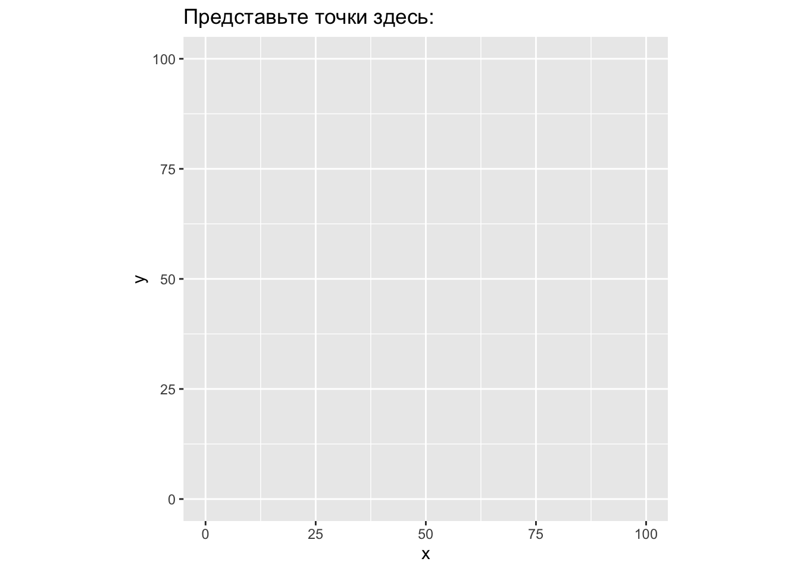
Применим разные функции, которые мы выучили:
mean(xxx$x)## [1] 54.26327mean(xxx$y)## [1] 47.83225median(xxx$x)## [1] 53.3333median(xxx$y)## [1] 46.0256Средние и медианы примерно одинаковые, при этом по х они около 53-54, а по у - примерно 46-47. Попытайтесь представить это. Идем дальше:
sd(xxx$x)## [1] 16.76514sd(xxx$y)## [1] 26.9354Похоже, расброс по у несколько больше, верно?
skew(xxx$x)## [1] 0.2807568skew(xxx$y)## [1] 0.2472603kurtosi(xxx$x)## [1] -0.2854912kurtosi(xxx$y)## [1] -1.063552Похоже, оба распределения немного право-ассиметричны и довольно "плоские".
Давайте еще посчитаем корреляцию. Мы про нее будем говорить позже гораздо подробнее. Пока что нам нужно знать, что она говорит о линейной связи двух переменных. Если корреляция положительная (максимум равен 1), то чем больше х, тем больше у. Если отрицательная (минимум равен -1), то чем больше х, тем меньше у. Если же корреляция равна нулю, то такая линейная зависимость отсутствует.
cor(xxx$x, xxx$y)## [1] -0.06447185Корреляция очень близка к нулю (делайте выводы и представляйте).
Давайте напоследок воспользуемся функцией describe() из psych:
describe(xxx)## vars n mean sd median trimmed mad min max range skew kurtosis
## x 1 142 54.26 16.77 53.33 53.69 15.97 22.31 98.21 75.90 0.28 -0.29
## y 2 142 47.83 26.94 46.03 46.90 30.79 2.95 99.49 96.54 0.25 -1.06
## se
## x 1.41
## y 2.26Готовы узнать, как выглядят эти данные на самом деле?!
Жмите сюда если готовы!
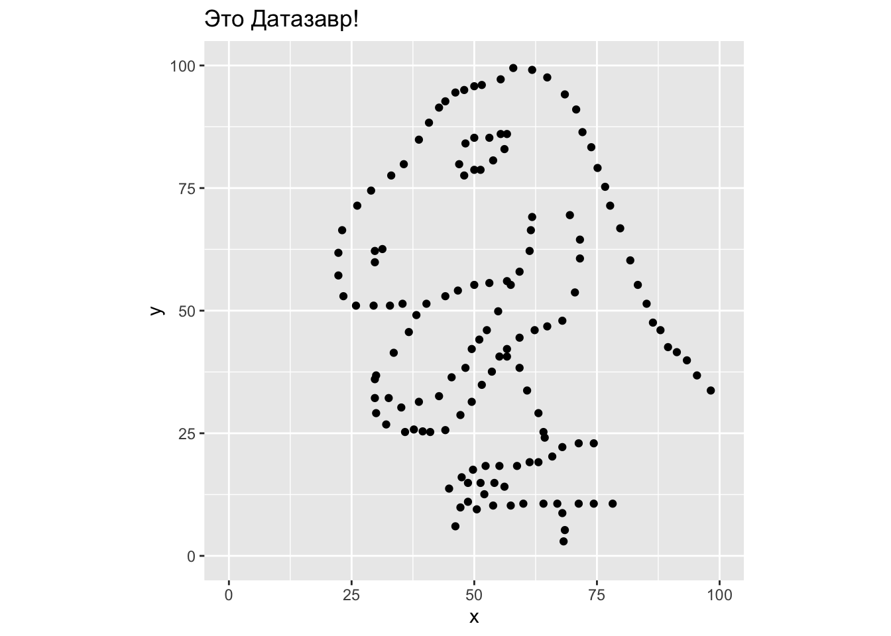
Из этого можно сделать важный вывод: не стоит слепо доверять описательным статистикам. Нужно визуализировать данные, иначе можно попасть в такую ситуацию в реальности. Все следующее занятие будет посвящено визуализации данных.
4.2 Визуализация данных в R
4.2.1 Базовые функции для графики
В R есть достаточно мощный встроенный инструмент для визуализации. Я приведу три простых примера. Во-первых, это та самая диаграмма рассеяния. Здесь все просто: функция plot(), вектора x и у, дополнительные параметры для цвета, размера, формы точек.
Для примера возьмем из дататейбла pbcdt уровень холистерина и возраст:
plot(pbcdt$age, pbcdt$chol)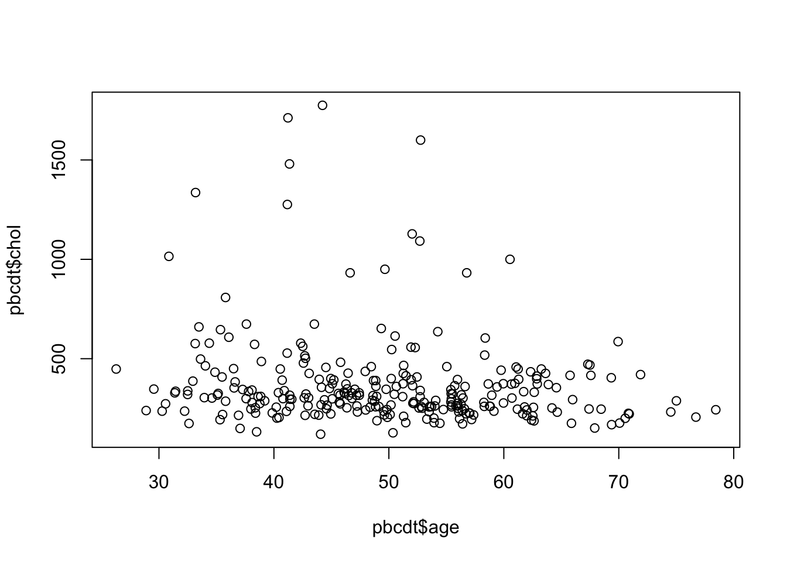
Между прочим, функция
plot()- это тоже универсальная (generic) функция, как иsummary(). В качестве аргумента можете ей скормить просто один вектор, матрицу, датафрейм. Более того, многие пакеты добавляют новые методы plot() для новых объектов из этих пакетов.
Другая распространенная функция - hist() - гистограмма:
hist(pbcdt$age)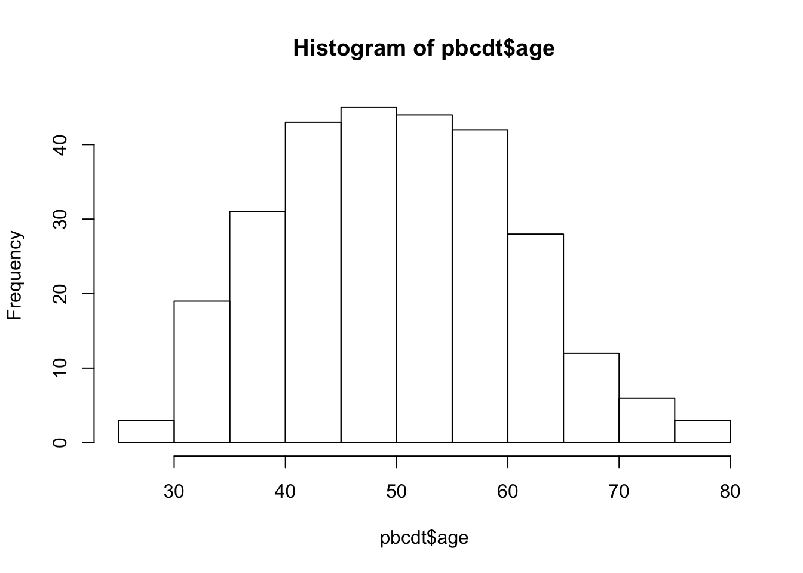
Ну и закончим на суперзвезде прошлого века под названием "ящик с усами"(boxplot with whiskers):
boxplot(chol ~ stage, pbcdt)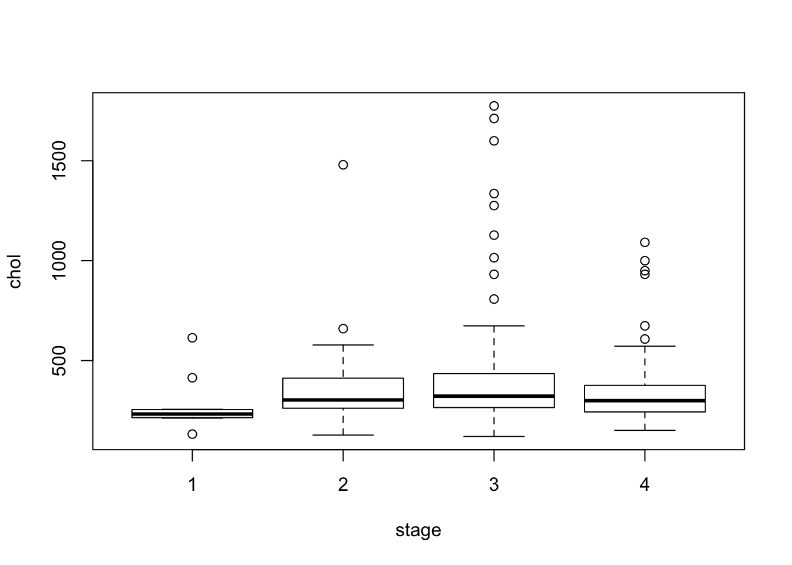
Здесь мы использовали уже знакомый нам класс формул. Они еще будут нам встречаться дальше, обычно они используются следующим образом: слева от ~ находится зависимая переменная, а справа - "предикторы". Эта интуиция работает и здесь: мы хотим посмотреть, как различается холестирин в зависимости от стадии.
4.2.2 ggplot2
gg в ggplot2 означает Grammar of Graphics - это книга Леланда Уилкинсона, в которой он попытался создать язык описания и создания всевозможных визуализаций. Хэдли Викхэм (уже знакомый нам по dplyr) дополнил эту систему (Layered Grammar of Graphics) и реализовал в качестве пакета в R под названием ggplot2.
install.packages("ggplot2")library(ggplot2)4.2.2.1 Layered Grammar of Graphics
Основные элементы Layered Grammar of Graphics
- Layer (geom +)
- Scale
- Coordinate system (coord)
- Faceting (facet)
- Theme
- Defaults
- Data
- Mapping
-Layer: - Data - Mapping (aes) - Statistical transformation (stat) - Geometric object (geom) - Position adjustment (position)
4.2.2.2 Пример 0: Круговая диаграмма
Чтобы продемонстрировать суть "графической грамматики" Уилкинсон в своей книге приводит в качестве примера круговую диаграмму. Да-да, тот самый злополучный пирог, которым все так плюются! Тем не менее, этот пример перевернет Ваше понимание графиков с ног на голову.
Итак, создадим объект ggplot с данными и каким-нибудь мэппингом по умолчанию (пока не обращайте внимания на него). Если мы попробуем это отрисовать, то получим пустой экран.
pie <- ggplot(data = pbcdt, aes(x = "", fill = sex))
pie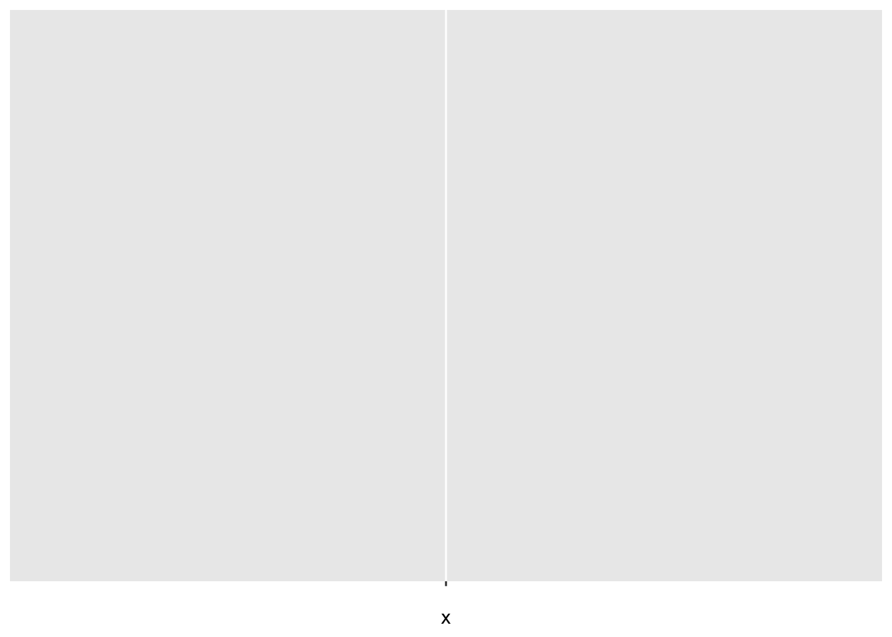
Теперь мы добавим на картинку геом, который будет наследовать мэппинг и набор данных, указанные в ggplot(). Этим геомом будет geom_bar(), для столбиковой диаграммы. Мы получаем немного странный график:
pie <- pie +
geom_bar(position = "fill")
pie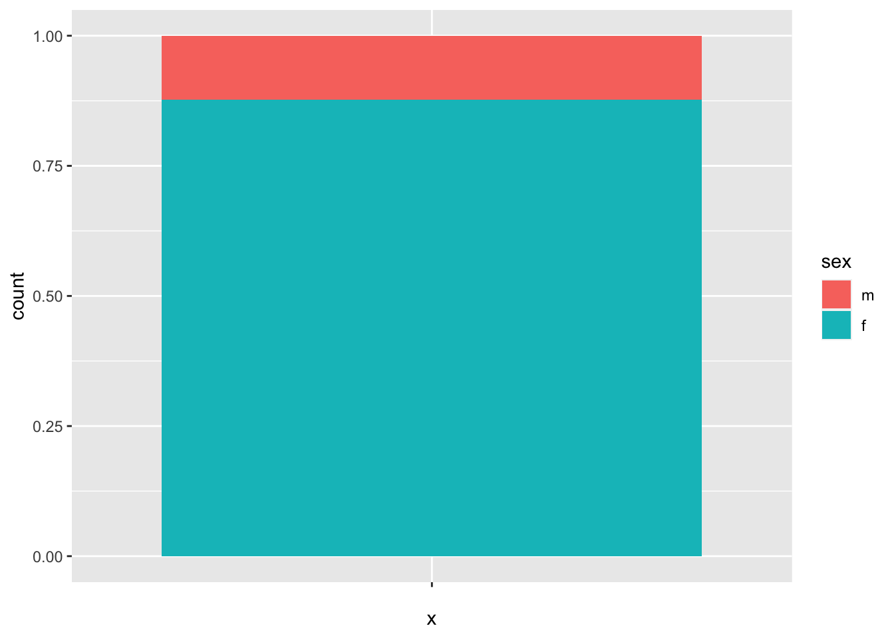
Как нам из этого получить круговую диаграмму? Надо поменять декартову систему координат на полярную (круговую)!
pie + coord_polar(theta = "y")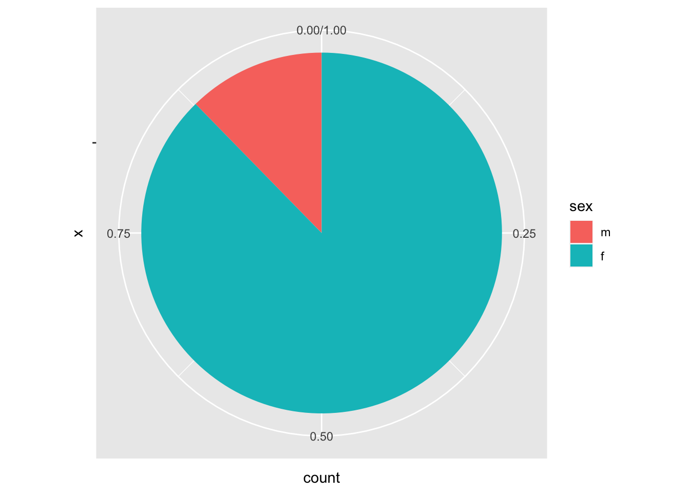
В качестве финального штриха мы можем максимально упростить тему:
pie + coord_polar(theta = "y")+theme_void()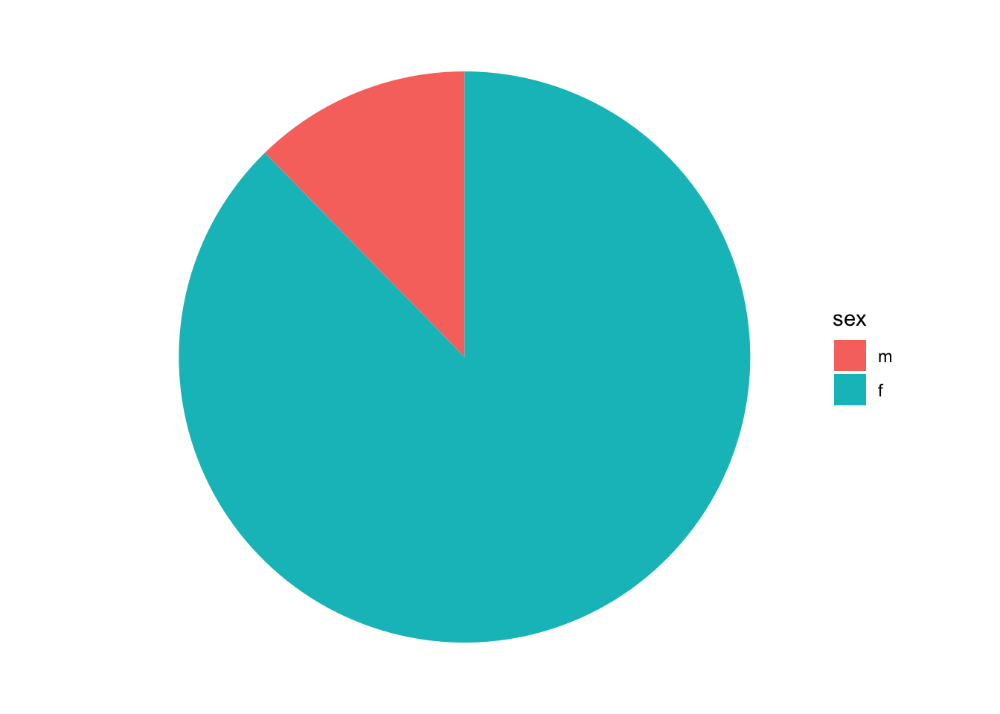
То есть пай-чарт можно рассматривать не как отдельный вид графика, а как столбчатую диаграмму в полярной системе координат. То же верно и для многих других графиков, которые можно представить с помощью ограниченного количества геомов и других элементов грамматики графики. Подумайте над этим!
4.2.2.3 Пример 1: Диаграмма рассеяния
Итак, давайте разбираться детально с синтаксисом ggplot2.
Для начала создадим объект ggplot с помощью ggplot() команды. Для нее можно указать данные и мэппинг по умолчанию с помощью аргументов data = и mapping = aes()
В качестве примера мы сделаем диаграмму рассеяния с возрастом по х и уровнем холестирина по у:
ggplot(data = pbcdt, mapping = aes(x = age, y = chol))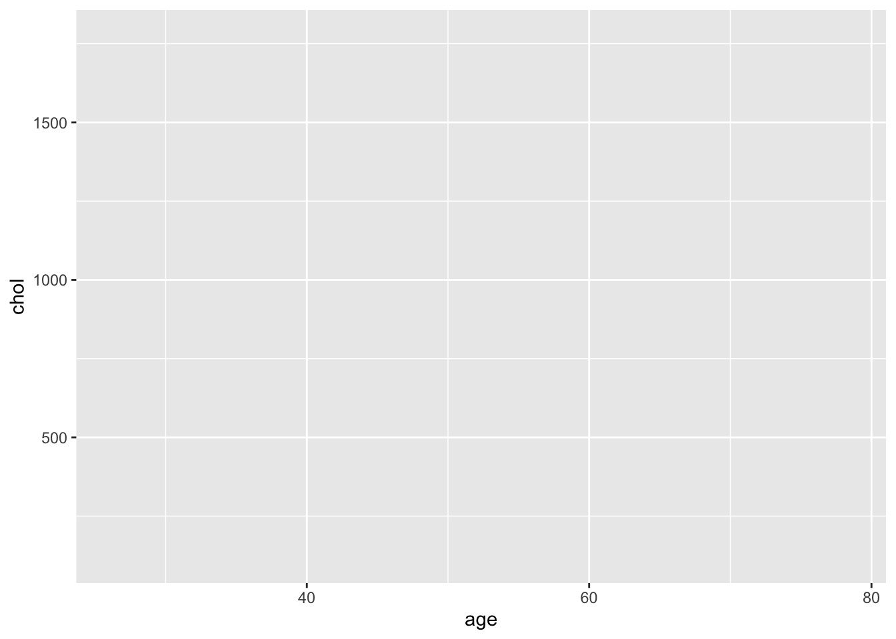
На самом деле, название параметров data = и mapping = можно опустить.
Наш график пуст. Нам нужно сделать слой с нужной геометрией. В данном случае - geom_point(). Синтаксис ggplot() несколько необычный - мы добавляем новые слои и дополнительные параметры с помощью +:
ggplot(data = pbcdt, mapping = aes(x = age, y = chol))+
geom_point()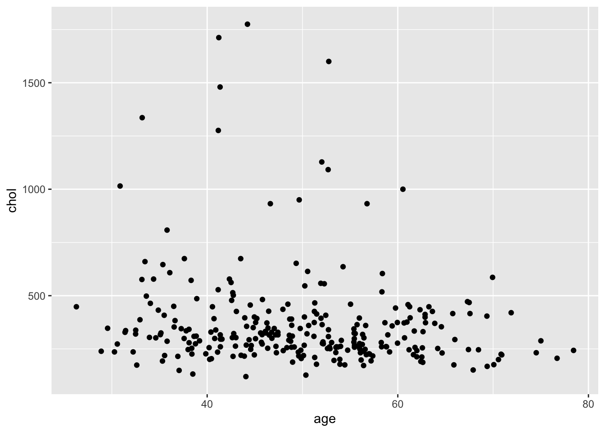
4.2.2.3.1 Фиксированные параметры vs mapping aesthetics
Теперь нам хотелось бы как-то разнообразить график. Изменить цвет, форму, размер точек:
ggplot(data = pbcdt, mapping = aes(x = age, y = chol))+
geom_point(size = 3, colour = "purple", shape = 15)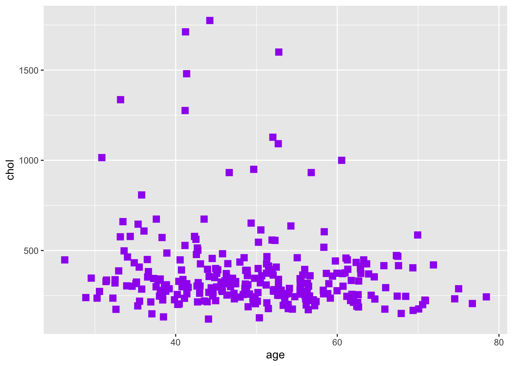
А что если мы хотим сделать параметры геома поставить в зависимость от данных? Тогда нам нужно менять мэппинг с помощью эстетики - aes():
ggplot(data = pbcdt, mapping = aes(x = age, y = chol))+
geom_point(size = 3,aes(colour = sex, shape = as.factor(hepato)))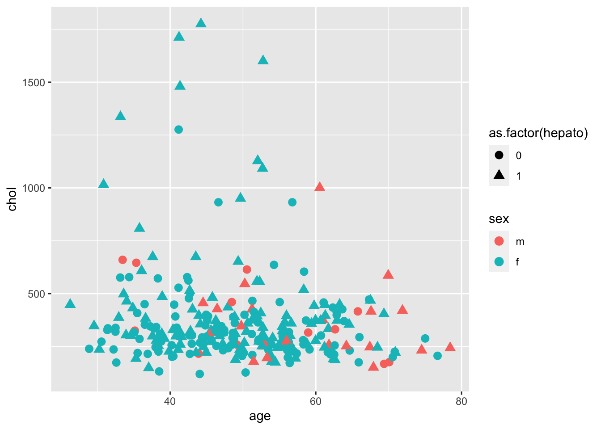
Если какой-то параметр зависит от данных, то он прописывается внутри aes(), если же это фиксированное значение - то он находится "извне" функции aes() (параметра mapping =).
Здесь мы
hepato(является печень увеличенной или нет) превратили в фактор. Иначеggplot2воспринимает эту колонку как континуальную переменную, потому что онаnumeric.
ggplot(data = pbcdt, mapping = aes(x = age, y = chol))+
geom_point(size = 2,aes(shape = as.factor(hepato)))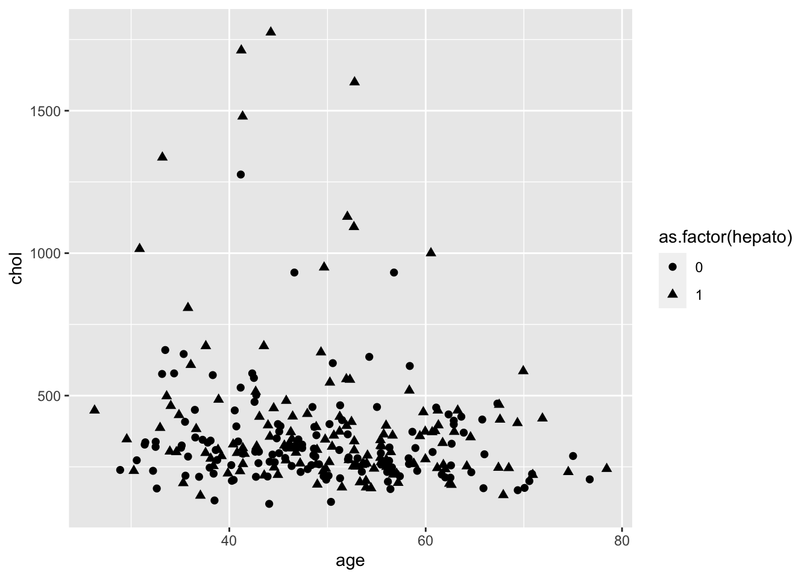
У использования цветов на графиков есть 3 основные функции:
Для различения групп
Для кодирования информации
Для подчеркивания
Если на диаграмме рассеяния у нас есть и мэппинг формы, и мэппинг цвета, то победа будет за цветом, причем обычно с большим перевесом. Разные формы будут только отвлекать, поэтому и смысла в них особого не будет. Впрочем, при достаточно большом количестве точек даже при одинаковом цвете формы точек дадут какое-то представление только если эти точки довольно сильно обособляются в отдельные паттерны.
ggplot(data = pbcdt, mapping = aes(x = age, y = chol))+
geom_point(size = 2,aes(shape = as.factor(hepato)))4.2.2.3.2 Overplotting и position
На картинке мы видим много точек, которые перекрывают друг друга. Мы не знаем, что стоит за точкой - возможно, под ней еще 10 таких же на той же позиции. Это плохо.
Данная проблема получила название оверплоттинга (overplotting). Решить ее можно разными способами.
Первый способ - добавить небольшой случайный шум (jitter). Это иногда подходит в случае дискретных значений - точки за счет шума немного "раздвигаются" и создают пятна большего или меньшего размера. Для зашумления можно использовать position adjustment:
ggplot(data = pbcdt, mapping = aes(x = age, y = chol))+
geom_point(size = 2,aes(shape = as.factor(hepato)), position = "jitter")То же самое можно сделать выбрав geom_jitter - geom_point с position = "jitter" по умолчанию. Но это нам не подходит - у нас значения не дискретные и никакой разницы не видно. Поэтому мы решим проблему оверплоттинга с помощью использования прозрачных точек. Для этого есть параметр alpha =, который при 0 дает полностью прозрачные точки, а при 1 - полностью непрозрачные точки.
ggplot(data = pbcdt, mapping = aes(x = age, y = chol))+
geom_point(size = 2,aes(shape = as.factor(hepato)), alpha = 0.4)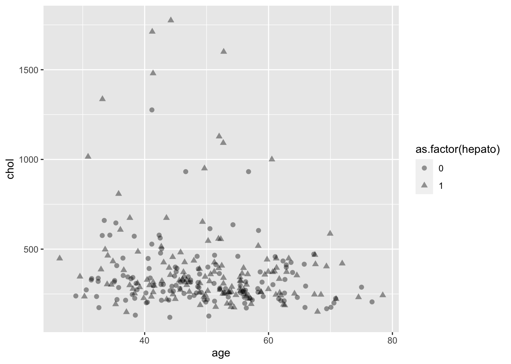
4.2.2.3.3 Двумерные гистограммы
Другой способ избежать оверплоттинга - использование других геомов, в которых можно кодировать плотность. Плотность здесь становится третьей переменной: мы разделяем все пространство на прямоугольники или шестиугольники, считаем сколько попало в каждый из них. Количество попаданий мы можем кодировать цветом. У нас получится "температурная карта" (heatmap) - там, где много точек, происходит что-то "горячее", а там где их нет - что-то "холодное". Но на самом деле, это всего лишь двумерная гистограмма.
В теории, мы могли бы сами агррегировать данные, использовать точки определенного цвета и размера и отрисовать двумерные гистограммы как точки или маленькие прямоугольники, просто в
ggplot2есть геомы, которые все это немного упрощают.
Для этого в ggplot2 есть несколько геомов: geom_hex(), geom_bin2d и их "трехмерные" братья (если плотность уже посчитана) - geom_raster(), geom_tile()
ggplot(pbcdt, aes(x = age, y = chol))+
geom_hex()+
scale_fill_viridis_c()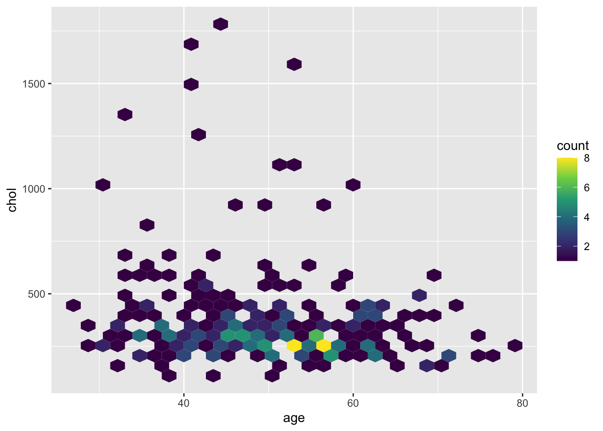
ggplot(pbcdt, aes(x = age, y = chol))+
geom_bin2d(binwidth = c(1, 50))+
scale_fill_viridis_c()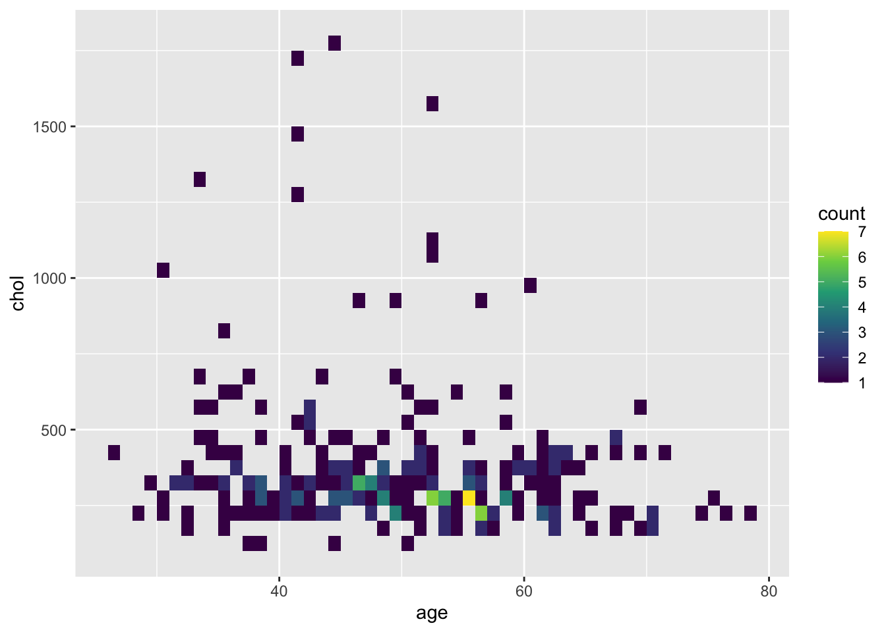
Геом geom_density_2d() позволяет нарисовать контуры плотности - довольно элегантный способ визуализировать пространственную динамику плотности. Можно
ggplot(pbcdt, aes(x = age, y = chol, colour = sex))+
geom_density_2d()+
geom_point(alpha = 0.4)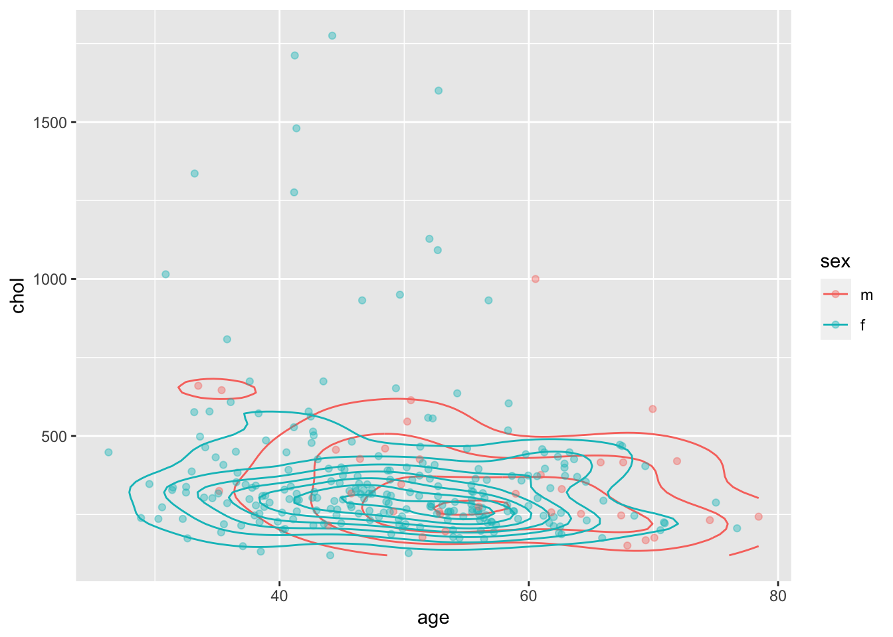
Мы можем наложить два слоя с разными геомами друг на друга. Таким образом можно создавать совершенно новые графики!
ggplot(pbcdt, aes(x = age, y = chol, colour = sex, fill = sex))+
stat_density_2d(aes(alpha = ..level..), geom = "polygon")+
geom_point(alpha = 0.4)+
scale_alpha_continuous(range = c(0.01, 0.2))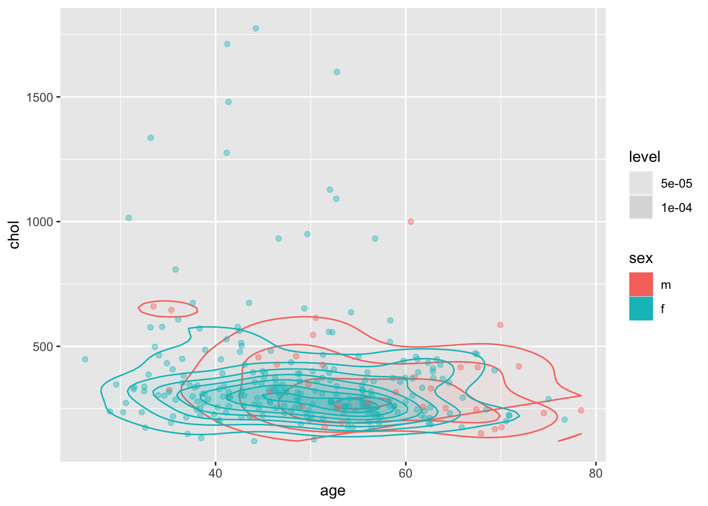
4.2.2.4 Пример 2: Столбиковая диаграмма
ggplot(pbcdt)+
geom_bar(aes(x = sex, fill = sex))+
facet_grid(rows = vars(stage), cols = vars(hepato))+
coord_flip()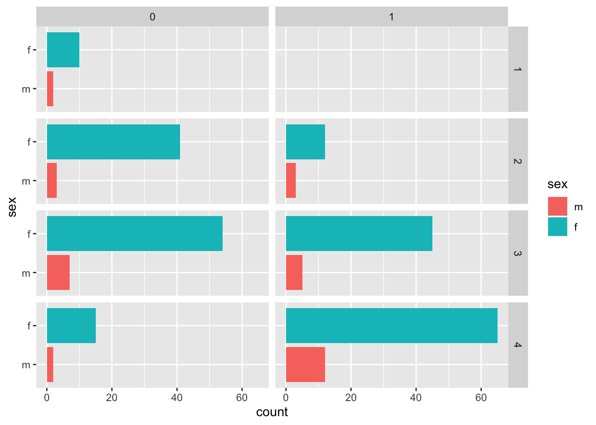
4.2.2.5 Пример 3: Гистограмма и ящик с усами
ggplot(pbcdt, aes(x = chol, fill = as.factor(stage)))+
geom_histogram(position = "identity")+
facet_grid(rows = vars(stage))## `stat_bin()` using `bins = 30`. Pick better value with `binwidth`.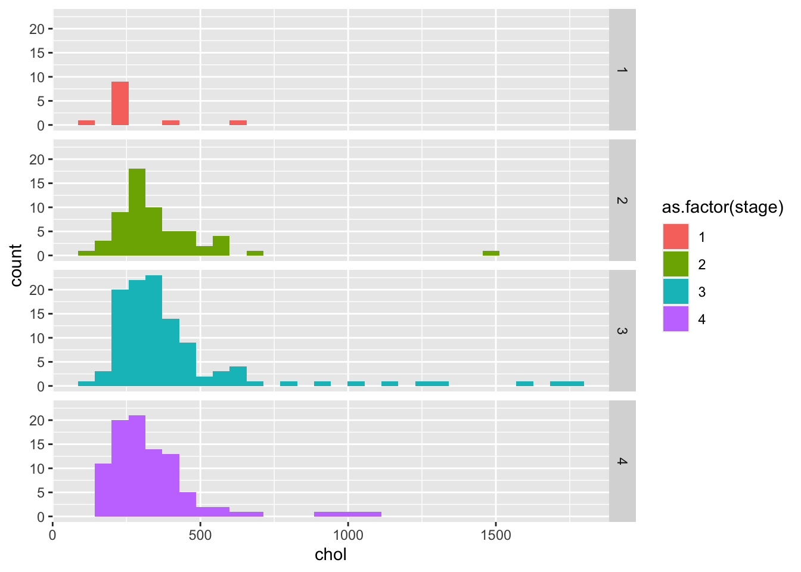
ggplot(pbcdt, aes(x = chol, fill = as.factor(stage)))+
geom_density(position = "identity")
ggplot(pbcdt, aes(x = chol, fill = as.factor(stage)))+
geom_density(position = "identity", alpha = 0.4, adjust = 3)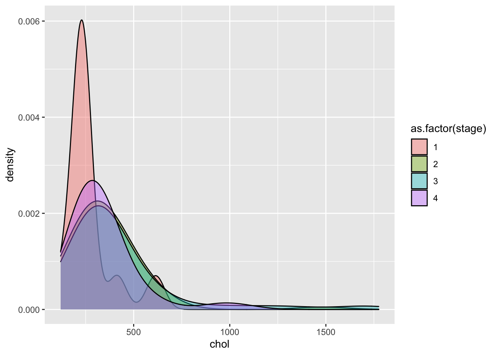
ggplot(pbcdt, aes(x = as.factor(stage), y = chol, fill = as.factor(stage)))+
geom_violin()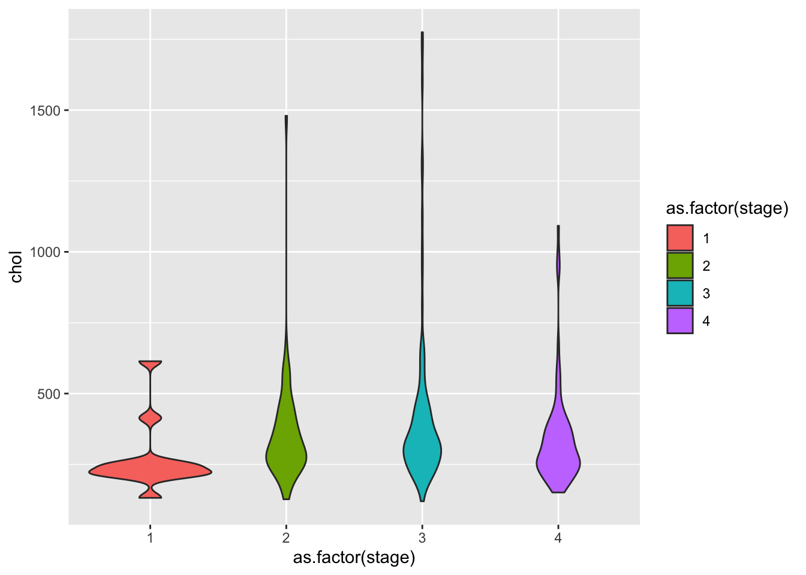
ggplot(pbcdt, aes(x = as.factor(stage), y = chol))+
geom_boxplot()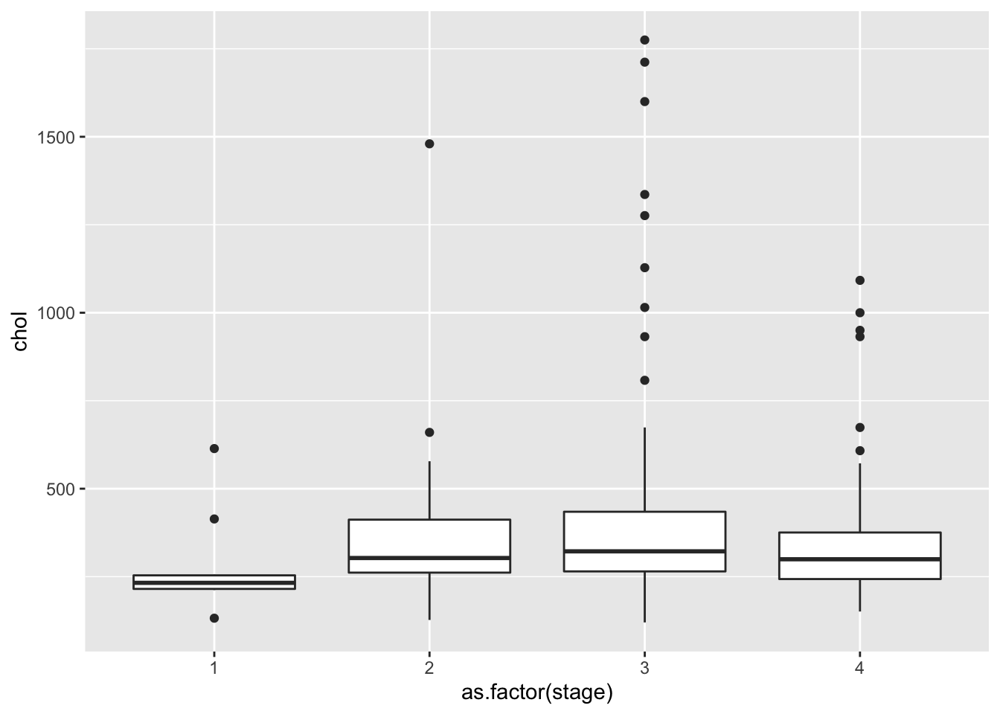
ggplot(pbcdt, aes(x = as.factor(stage), y = chol))+
geom_violin(aes(fill = as.factor(stage)))+
geom_boxplot(width = 0.1)4.2.3 Дополнения к ggplot2
ggplot2 стал настолько популярным пакетом, что существуют сторонние пакеты, которые расширяют его функциональность. В некоторых можно найти новые геомы, в некоторых - новые темы и палитры. Ознакомиться с разнообразием расширений ggplot2 можно здесь. Мы же остановимся на одном из них - cowplot
4.2.4 cowplot
Для начала нужно установить cowplot:
install.packages("cowplot")И подгрузить его:
library(cowplot)##
## Attaching package: 'cowplot'## The following object is masked from 'package:ggplot2':
##
## ggsaveg1 <- ggplot(data = pbcdt, mapping = aes(x = age, y = chol))+
geom_point(size = 2,aes(colour = sex), alpha = 0.3)
g2 <- ggplot(pbcdt, aes(x = age, y = chol))+
geom_hex()+
scale_fill_viridis_c()
g3 <- ggplot(pbcdt, aes(x = age, y = chol))+
geom_hex()+
scale_fill_viridis_c()
g4 <- ggplot(pbcdt, aes(x = age, y = chol, colour = sex))+
geom_density_2d()+
geom_point(alpha = 0.1)plot_grid(g1, g4,g2, g3, labels = LETTERS[1:4])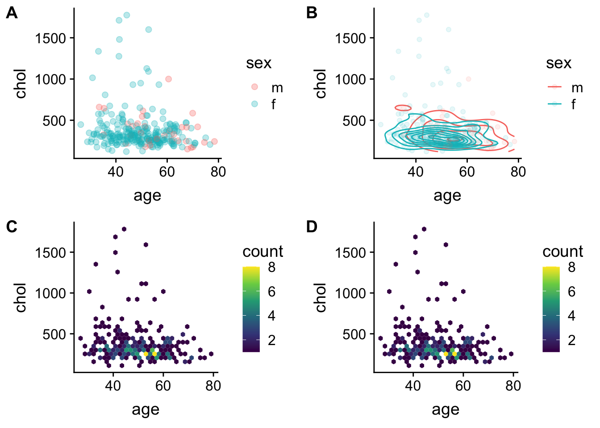
Если хотите вернуть стандартную тему ggplot2, то выполните следующую команду:
theme_set(theme_grey())4.2.5 plotly
install.packages("plotly")library(plotly)##
## Attaching package: 'plotly'## The following object is masked from 'package:ggplot2':
##
## last_plot## The following object is masked from 'package:stats':
##
## filter## The following object is masked from 'package:graphics':
##
## layoutggplotly(g1)Квартиль --- это частный пример квантиля. Другой известный квантиль --- процентиль. Процентили часто используют для сравнения значения с другими значениями. Например, 63ий процентиль означает, что данное значение больше 63% значений в выборке.↩